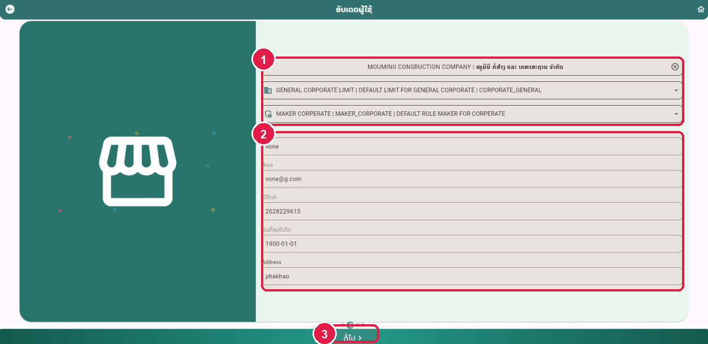
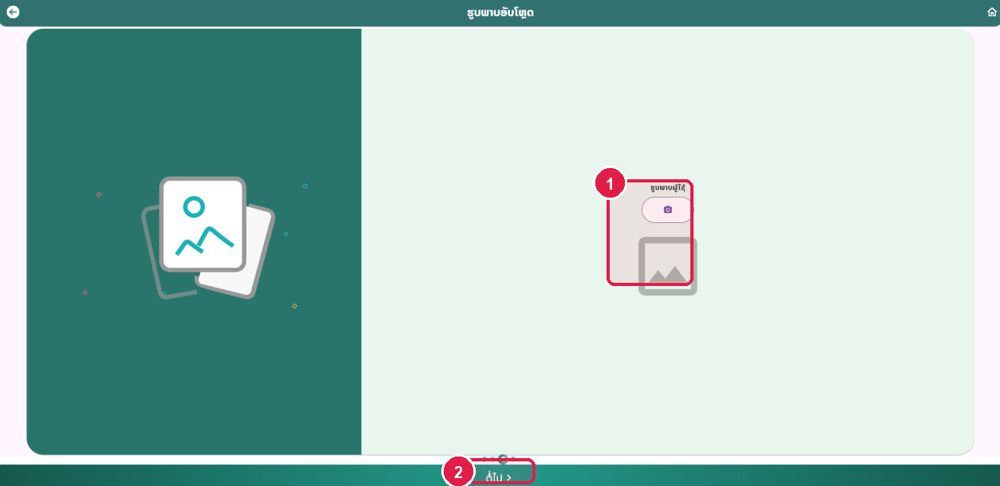
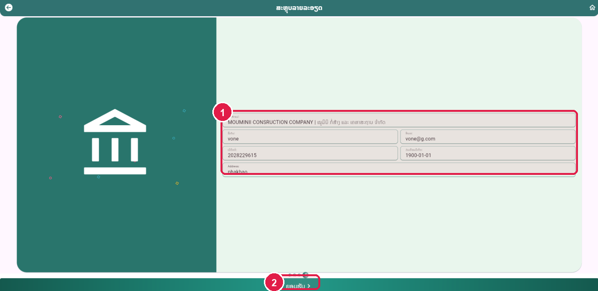
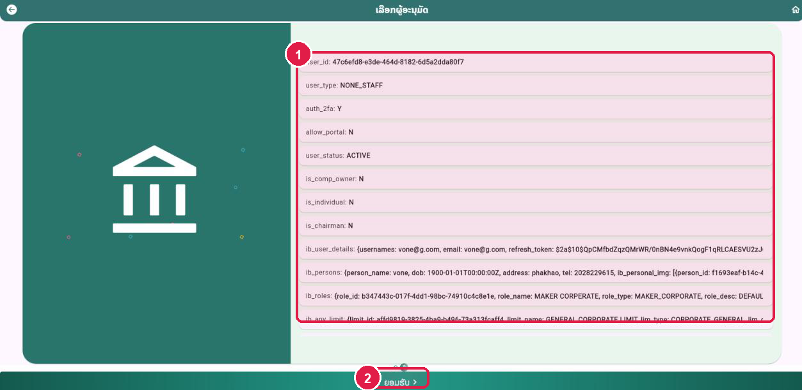
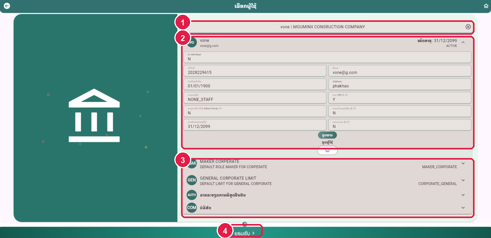

ຂັ້ນຕອນທີ 1 (1.1): ເຂົ້າເມນູ Update User ແລະ ເລືອກຜູ້ໃຊ້ທີ່ຕ້ອງການແກ້ໄຂ
ຄົ້ນຫາ User ທີ່ຕ້ອງການແກ້ໄຂຂໍ້ມູນ
ເລືອກ User ຜູ້ໃຊ້ທີ່ຕ້ອງການແກ້ໄຂ (Mark 1)
ຄລິກໃສ່ຊ່ອງ "ລາຍລະອຽດຂອງຜູ້ໃຊ້" ເພື່ອຄົ້ນຫາ ແລະ ເລືອກຜູ້ໃຊ້ທີ່ຕ້ອງການແກ້ໄຂຂໍ້ມູນ.
ກົດປຸ່ມ "ຕໍ່ໄປ >" (Mark 2)
ກົດປຸ່ມ "ຕໍ່ໄປ >" ຢູ່ດ້ານລຸ່ມ.
ໝາຍເຫດ: ສາມາດຄົ້ນຫາຜູ້ໃຊ້ດ້ວຍຊື່ຜູ້ໃຊ້ ຫຼື ຊື່ບໍລິສັດ.

ຂັ້ນຕອນທີ 2: ກວດສອບໜ້າຕ່າງຂໍ້ມູນຜູ້ໃຊ້ທີ່ເລືອກ
ເບິ່ງລາຍລະອຽດຂໍ້ມູນປັດຈຸບັນກ່ອນທຳການແກ້ໄຂ
ຜູ້ໃຊ້ ແລະ ບໍລິສັດທີ່ເລືອກ (Mark 1)
ສະແດງຊື່ຜູ້ໃຊ້ ແລະ ບໍລິສັດ (ເຊັ່ນ: vone | MOUMINII CONSRUCTION COMPANY).
ລາຍລະອຽດຂໍ້ມູນຜູ້ໃຊ້ປັດຈຸບັນ (Mark 2)
ສະແດງເບີຕິດຕໍ່, ອີເມວ, ວັນເດືອນປີເກີດ, ທີ່ຢູ່, ປະເພດຜູ້ໃຊ້, ສະຖານະ 2FA ແລະ ຮູບຜູ້ໃຊ້.
ສິດທິ Role ແລະ ວົງເງິນ Limit (Mark 3)
ສະແດງສິດ MAKER CORPORATE, GENERAL CORPORATE LIMIT, ລາຍລະອຽດການພິສູດຢືນຢັນ ແລະ ບໍລິສັດ.
ກົດປຸ່ມ "ຕໍ່ໄປ >" (Mark 4)
ກົດປຸ່ມ "ຕໍ່ໄປ >" ເພື່ອເຂົ້າສູ່ແບບຟອມແກ້ໄຂຂໍ້ມູນ.
ໝາຍເຫດ: ກວດສອບວ່າເປັນຜູ້ໃຊ້ທີ່ຕ້ອງການແກ້ໄຂແທ້ ແລ້ວກົດປຸ່ມຕໍ່ໄປ.

ຂັ້ນຕອນທີ 3 (1.2): ແກ້ໄຂຂໍ້ມູນຜູ້ໃຊ້ທີ່ເລືອກ (ອັບເດດຜູ້ໃຊ້)
ແກ້ໄຂຊື່ເຕັມ, ອີເມວ, ເບີຕິດຕໍ່, ວັນເດືອນປີເກີດ ແລະ ທີ່ຢູ່
ຂໍ້ມູນບໍລິສັດ, ວົງເງິນ Limit ແລະ Role (Mark 1)
ກວດສອບ ຫຼື ເລືອກວົງເງິນ (GENERAL CORPORATE LIMIT) ແລະ ສິດ (MAKER CORPORATE).
ແກ້ໄຂຂໍ້ມູນສ່ວນຕົວຂອງຜູ້ໃຊ້ (Mark 2)
ໃນໜ້ານີ້ສາມາດແກ້ໄຂຂໍ້ມູນຜູ້ໃຊ້ ເຊັ່ນ: ຊື່ເຕັມ, ອີເມວ, ເບີຕິດຕໍ່, ວັນເດືອນປີເກີດ ແລະ ທີ່ຢູ່ (Address).
ກົດປຸ່ມ "ຕໍ່ໄປ >" (Mark 3)
ຫຼັງຈາກແກ້ໄຂຂໍ້ມູນສຳເລັດແລ້ວ ໃຫ້ກົດປຸ່ມ "ຕໍ່ໄປ >".
ໝາຍເຫດ: ສາມາດແກ້ໄຂສະເພາະຊ່ອງຂໍ້ມູນທີ່ຕ້ອງການປ່ຽນແປງ.

ຂັ້ນຕອນທີ 4: ອັບໂຫຼດຮູບພາບຜູ້ໃຊ້ (ໃສ່ ຫຼື ບໍ່ໃສ່ກໍໄດ້)
ໜ້າຕ່າງຮູບພາບອັບໂຫຼດ
ອັບໂຫຼດຮູບຜູ້ໃຊ້ (ຮູບພາບຜູ້ໃຊ້) (Mark 1)
ຜູ້ໃຊ້ສາມາດກົດໄອຄອນກ້ອງເພື່ອໃສ່ຮູບພາບໃໝ່ໄດ້ ຫຼື ບໍ່ໃສ່ກໍໄດ້.
ກົດປຸ່ມ "ຕໍ່ໄປ >" (Mark 2)
ກົດປຸ່ມ "ຕໍ່ໄປ >" ເພື່ອໄປສູ່ໜ້າສະຫຼຸບລາຍລະອຽດ.
ໝາຍເຫດ: ຖ້າບໍ່ຕ້ອງການປ່ຽນຮູບຜູ້ໃຊ້ ສາມາດກົດປຸ່ມ ຕໍ່ໄປ ຂ້າມໄປໄດ້ເລີຍ.

ຂັ້ນຕອນທີ 5: ກວດຂໍ້ມູນສະຫຼຸບລາຍລະອຽດ ແລະ ກົດປຸ່ມຍອມຮັບ
ຢືນຢັນຂໍ້ມູນຫຼັງການແກ້ໄຂ
ກວດສອບຂໍ້ມູນທີ່ແກ້ໄຂ (Mark 1)
ກວດເບິ່ງຊື່ບໍລິສັດ, ຊື່ເຕັມ, ອີເມວ, ເບີຕິດຕໍ່, ວັນເດືອນປີເກີດ ແລະ ທີ່ຢູ່.
ກົດປຸ່ມ "ຍອມຮັບ >" (Mark 2)
ຫຼັງຈາກກວດຂໍ້ມູນຄົບຖ້ວນແລ້ວ ກົດປຸ່ມ "ຍອມຮັບ >".
ໝາຍເຫດ: ລາຍການແກ້ໄຂຂໍ້ມູນຜູ້ໃຊ້ຈະຖືກສົ່ງໄປລໍຖ້າການອະນຸມັດ.

ຂັ້ນຕອນທີ 6: ແກ້ໄຂຂໍ້ມູນຜູ້ໃຊ້ສຳເລັດ (Request Success)
ໜ້າຈໍຢັ້ງຢືນ Request Success
ສະຖານະ Request Success (Mark 1)
ສົ່ງຄຳຮ້ອງຂໍແກ້ໄຂຂໍ້ມູນຜູ້ໃຊ້ສຳເລັດ.
ລາຍລະອຽດຜູ້ໃຊ້ (Mark 2)
ຂໍ້ມູນຈະມີຜົນທັນທີຫຼັງຈາກຜູ້ອະນຸມັດກົດ Approve.
ປຸ່ມ Share / Save / Home (Mark 3)
ກົດ Save ຫຼື Home.
ໝາຍເຫດ: ສຳເລັດຂັ້ນຕອນການແກ້ໄຂຂໍ້ມູນຜູ້ໃຊ້ (Update User).
ຂັ້ນຕອນທີ 1 (2.1): ເຂົ້າເມນູ Delete User ແລະ ເລືອກຜູ້ໃຊ້ທີ່ຕ້ອງການລົບ
ຄົ້ນຫາ User ທີ່ຕ້ອງການລົບອອກຈາກລະບົບ
ເລືອກ User ຜູ້ໃຊ້ທີ່ຕ້ອງການລົບ (Mark 1)
ຄລິກໃສ່ຊ່ອງ "ລາຍລະອຽດຂອງຜູ້ໃຊ້" ເພື່ອຄົ້ນຫາ ແລະ ເລືອກຜູ້ໃຊ້ທີ່ຕ້ອງການລົບ.
ກົດປຸ່ມ "ຕໍ່ໄປ >" (Mark 2)
ກົດປຸ່ມ "ຕໍ່ໄປ >" ເພື່ອເບິ່ງລາຍລະອຽດຂອງຜູ້ໃຊ້.
ໝາຍເຫດ: ກະລຸນາກວດສອບຊື່ຜູ້ໃຊ້ ແລະ ບໍລິສັດໃຫ້ລະອຽດກ່ອນດຳເນີນການລົບ.
ຂັ້ນຕອນທີ 2: ກວດເບິ່ງຂໍ້ມູນຜູ້ໃຊ້ທີ່ເລືອກ ແລ້ວກົດປຸ່ມຕໍ່ໄປ
ກວດສອບລາຍລະອຽດຜູ້ໃຊ້ກ່ອນລົບ
ຊື່ຜູ້ໃຊ້ ແລະ ບໍລິສັດ (Mark 1)
ກວດສອບຊື່ຜູ້ໃຊ້ ແລະ ບໍລິສັດທີ່ເລືອກ.
ຂໍ້ມູນສ່ວນຕົວ ແລະ ສະຖານະບັນຊີ (Mark 2)
ກວດສອບເບີໂທ, ອີເມວ, ວັນເກີດ ແລະ ສະຖານະ.
ສິດ Role ແລະ ວົງເງິນ Limit (Mark 3)
ກວດສອບ Role ແລະ Limit ຂອງຜູ້ໃຊ້.
ກົດປຸ່ມ "ຕໍ່ໄປ >" (Mark 4)
ຫຼັງຈາກເລືອກ User ທີ່ຈະລົບແລ້ວ ໃຫ້ກົດປຸ່ມ "ຕໍ່ໄປ >".
ໝາຍເຫດ: ກົດປຸ່ມຕໍ່ໄປເພື່ອເຂົ້າສູ່ໜ້າຢືນຢັນການລົບຂໍ້ມູນ.

ຂັ້ນຕອນທີ 3 (2.2): ກວດເບິ່ງລາຍລະອຽດຂໍ້ມູນ User ແລ້ວກົດປຸ່ມຍອມຮັບ
ການລົບຂໍ້ມູນຜູ້ໃຊ້ທີ່ເລືອກ
ກວດເບິ່ງຂໍ້ມູນລະບົບຂອງ User ທີ່ຈະລົບ (Mark 1)
ລະບົບສະແດງຂໍ້ມູນ: user_id, user_type, auth_2fa, user_status, ib_user_details, ib_persons, ib_roles ແລະ ib_apv_limit.
ກົດປຸ່ມ "ຍອມຮັບ >" (Mark 2)
ຫຼັງຈາກກວດເບິ່ງ User ແລ້ວ ໃຫ້ກົດປຸ່ມ "ຍອມຮັບ >" ເພື່ອຢືນຢັນການລົບ.
ໝາຍເຫດ: ເມື່ອກົດປຸ່ມຍອມຮັບແລ້ວ ຈະເຫັນໜ້າຕ່າງສຳເລັດ.
ຂັ້ນຕອນທີ 4: ສົ່ງຄຳຮ້ອງຂໍລົບ User ສຳເລັດ (Request Success)
ໜ້າຈໍຢັ້ງຢືນ Request Success
ສະຖານະ Request Success (Mark 1)
ສົ່ງຄຳຮ້ອງຂໍລົບຜູ້ໃຊ້ສຳເລັດ.
ລໍຖ້າການອະນຸມັດ (Mark 2)
ການລົບ User ຈະສຳເລັດສົມບູນເມື່ອຜ່ານການອະນຸມັດຈາກຜູ້ອະນຸມັດ.
ປຸ່ມ Share / Save / Home (Mark 3)
ກົດ Save ຫຼື Home.
ໝາຍເຫດ: ສຳເລັດຂັ້ນຕອນການລົບ User.
ຂັ້ນຕອນທີ 1: ເຂົ້າເມນູ View User ແລະ ເລືອກຜູ້ໃຊ້ທີ່ຕ້ອງການກວດເບິ່ງ
ຄົ້ນຫາ User ໃນລະບົບເພື່ອກວດເບິ່ງລາຍລະອຽດ
ເລືອກ User ທີ່ຕ້ອງການກວດເບິ່ງ (Mark 1)
ຄລິກຊ່ອງຄົ້ນຫາ "ລາຍລະອຽດຂອງຜູ້ໃຊ້" ເພື່ອເລືອກ User ທີ່ຕ້ອງການກວດສອບຂໍ້ມູນ.
ກົດປຸ່ມ "ຕໍ່ໄປ >" (Mark 2)
ກົດເພື່ອສະແດງຂໍ້ມູນລະອຽດຂອງຜູ້ໃຊ້.
ໝາຍເຫດ: ເມນູ View User ໃຊ້ສຳລັບກວດເບິ່ງຂໍ້ມູນຜູ້ໃຊ້ໂດຍບໍ່ມີການປ່ຽນແປງຂໍ້ມູນ.

ຂັ້ນຕອນທີ 2: ກວດເບິ່ງລາຍລະອຽດຂໍ້ມູນທັງໝົດຂອງ User
ສະແດງຂໍ້ມູນສ່ວນຕົວ, ສະຖານະ, ສິດທິ Role ແລະ ວົງເງິນ Limit
ຊື່ຜູ້ໃຊ້ ແລະ ບໍລິສັດ (Mark 1)
ສະແດງຊື່ຜູ້ໃຊ້, ບໍລິສັດ, ວັນໝົດອາຍຸ ແລະ ສະຖານະ ACTIVE.
ຂໍ້ມູນຜູ້ໃຊ້ ແລະ ຮູບພາບ (Mark 2)
ກວດເບິ່ງເບີຕິດຕໍ່, ອີເມວ, ວັນເດືອນປີເກີດ, ທີ່ຢູ່, ປະເພດຜູ້ໃຊ້, ສະຖານະ 2FA, ສິດ Admin Portal, ສະຖານະເຈົ້າຂອງບໍລິສັດ, ສະຖານະປະທານ ແລະ ຮູບຜູ້ໃຊ້.
ສິດ Role, ວົງເງິນ Limit ແລະ ບໍລິສັດ (Mark 3)
ສາມາດກົດຂະຫຍາຍເບິ່ງ MAKER CORPORATE, GENERAL CORPORATE LIMIT, ລາຍລະອຽດການພິສູດຢືນຢັນ ແລະ ບໍລິສັດ.
ປຸ່ມ "ຍອມຮັບ >" (Mark 4)
ກົດປຸ່ມ "ຍອມຮັບ >" ເມື່ອກວດເບິ່ງຂໍ້ມູນສຳເລັດ.
ໝາຍເຫດ: ສຳເລັດການກວດເບິ່ງຂໍ້ມູນຜູ້ໃຊ້ (View User).